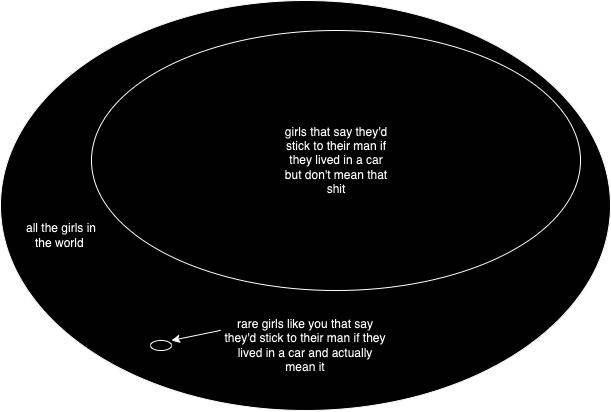
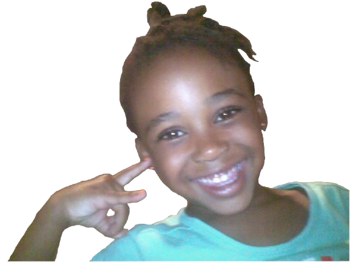

Hey pooks, I'm glad you found your way here <3
I hope you've toggled on the
background
music
in the top right corner for some ambience, because this might be long for you (probably what
I'll say).
By the way, before you start, just tell me if you want to clarify anything
or
any words here, I do get carried away with my vocab sometimes.
Lastly, I'm sorry for
the
wait, this little project has been a learning experience for me as a web developer, so it
hasn't been a smooth road, but I'm so happy you're seeing this.
But anyway,
here
goes...
Before June
So how does it feel huh? Being the world's best girlfriend and all?
A while ago you told me that I need to give classes on how to be a good boyfriend, and it's
almost as if God wanted to be ironic because I wanted to include something like that in this essay.
You've been the best girlfriend I've had. You've been so good that I wish you were my
first and last. But I'm also grateful that you're not my first because I get to leverage
all the lessons that I've learnt in the past in order to be the best man I can be for you.
I may have said this nearly a thousand times throughout the duration of our relationship, but
I love you. So much.
Usually when people say those words, there tends to be a utilitarian aspect to it; some aspect of it
that is self-serving. I say this because when people usually say that, it's usually solely
understood as some feeling of intense affection/attraction. When I say it, there's a way deeper and
vast underpinning that serves as the foundation of it.
When I say that I love Manuela, what underpins the word "love" fails to remain bounded by mere
emotion. It really encompasses a vast and dynamic spectrum of human experiences, from passion to
companionship, from sacrifice to empathy. It's romantic, it's platonic, it's familial
(since we're gonna build a family one day), and it's spiritual.
It involves an ability to see beyond myself and to care for you in ways that sometimes defy
self-interest.
It's not to say that "because I find you attractive, I'm going to stick beside you until
someone else that's more attractive comes along" (because that tends to be the theme).
It's to say that "even if shit went completely sideways, if you got into some accident and
every physical aspect about you changed for the worst, my love for you would keep me continuously
striving to be the best man I can be for you". It's to say that "even when there's
literally nothing tangible that I gain from being with you, I will still happily be with you". And
that's because when I say that I love you, I mean that I love you, not what I find convenient
about being with you. I'm not here to gain anything from being with you. I'm here to build
with you.
Now why do I have so much love for you? That's actually mostly what this essay's about,
and I'm not going to overtly list every reason below.
A few days ago, you told me that you'd stay with me even if we lived in a car and had to shower
in a gym, and that made me think: In this society, there's the total set of all women, and in
that set, there's the set of women who are honest about not being willing to stick around if
things get tough, then there's set of women who are not honest about that (who say that they
would stick around, but actually wouldn't), then there are rare girls like you, who are honest
about actually being willing do so (hopefully haha).
Kinda like this:

And if you're actually honest about saying that, then it's an even greater sign that
you're the one for me--a sign that when we become wealthy one day, I'm going to give you
anything you want, because that is rare. The girls I was with (sorry for mentioning those rats)
would either act entitled to whatever I have, or there would be some shallow qualifier for what
they're ideal type is (such as being tall, and looking a certain way/having certain things),
and I'd get uninterested so quickly, which is, for the most part, why those relationships
didn't work out (thankfully).
I'd lose interest because to say that "I want someone who's X", to me, is to imply "if I
came across someone who was more X than you, I'd consider cheating/getting with them", which we
obviously don't want.
I never was in touch with my masculine, protecting, providing side nor I was ever in touch with my
more-feminine & gentle, emotional side bc that'd be seen as icky. You're the first girl that
hasn't given me any that shit. Which is why you're the first one that I'm going to
give my all to. You are rare, and I hope you know that.
You're so rare that I barely believed that you were being serious at all when we initially met,
I felt that you probably had been talking to other guys you'd found attractive too (because why
snap, of all places lol?). But thankfully that's not true, as far as I know (if it is, we
weren't together anyway, so it doesn't matter). This actually brings me to another point:
Beyond Attraction
From my experience, relationships haven't seemed to be tethered to much that is beyond sexual
attraction. I've always felt very cynical towards the idea of genuine romantic love outside of
sexual attraction. Not because I'd feel skeptical of "Manu the person" but I'd feel
skeptical of "Manu the animal" (just an example), because as much as we all may want to be part of
something permanent and everlasting with another person, I've always suspected that beneath it
all, there might be some truths about the "animal's" true carnal desires (or what the person is
truly attracted to, despite saying otherwise) that would be very hard to swallow, because one's
partner wouldn't measure up to that. The cynical part of me would think that you're not
entirely being honest when you say that you only find me attractive (have you seen these other
niggas on the Tok?), but you are helping me kill that cynical part of me that would think of
everything purely in terms of sexual/genetic selection, and for that, I'm beyond grateful.
You're restoring my hope in true love, and I really love that I still have a lifetime to thank
you for it. My love for you transcends and has always transcended your looks and my attraction for
you (as sexy as you are), and it always will, forever.
The Girl
I'm never going to leave you because of who you are as a person, the kind, loving, humble and
selfless girl that I fell in love with. The girl that would apologise even whenever she'd do
nothing wrong. The girl that would randomly remind me that she loves me and how handsome I am on a
daily basis. A girl that has old wounds that are still being healed.
I love hearing this girl smile and giggle on our voice calls (I literally is music to my ears), and
seeing her hide her blush on video calls what I look forward to on every morning. It nearly feels
like I'm talking to her inner child.
This beautiful baby girl:

As long as I'm alive, it will always be my goal to make this baby girl smile indefinitely. God knows how much that means to me.
Because in a world full of this:
.png)
You gave me this:
.png)